visión por computador · sjk002 · lección 003
Filtrado en frecuencia
A · Fourier · B · DFT y FFT · C · teorema de la convolución · D · propiedades del espectro · E · filtros paso bajo, paso alto, banda y notch · F · repaso
idea central
Representación alternativa
La misma imagen puede escribirse en bases distintas. No cambia la información: cambia lo que es fácil de ver.
⇅ transformación lineal invertible (sin pérdida)

serie de Fourier · ejemplo
Aproximar una rampa
en \(t\in(-\pi,\pi)\), extendida con periodo 2π.
Con 1, 3, 10 y 50 términos la suma se parece cada vez más a la rampa.
Fourier, 1822
Serie de Fourier
Toda señal periódica (de periodo T) es una suma, posiblemente infinita, de senos y cosenos de frecuencias múltiplos de la fundamental.
bloques de construcción
Ondas discretas 1D
k = número de ciclos completos en las N muestras. El periodo es N/k muestras. Aquí N = 20, A = 1 y k = 1, 2, 3 (los puntos son las muestras de k = 1).
bloques de construcción
Ondas 2D
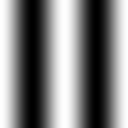
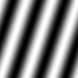
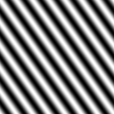
Constante a lo largo de las rectas \(un/N+vm/M=\text{cte}\): varía en la dirección del vector (u, v), perpendicular a las crestas. Su módulo \(\sqrt{u^2+v^2}\) es la frecuencia: más grande, franjas más finas.
exponencial compleja · demostración
Euler y la exponencial
lo que hay que escribir en el examen
Complejos en Python
z = complex(3, 4) # o bien 3 + 4j
np.abs(z) # 5.0 módulo
np.angle(z) # 0.927 fase (rad)
np.real(z) # 3.0
np.imag(z) # 4.0
np.conj(z) # (3-4j)
np.exp(1j * theta) # e^{jθ}
z = a + bj es incorrecto: bj se lee como una variable. Hay que escribir a + b*1j o complex(a, b).La exponencial 2D es separable ⇒ la DFT 2D es una DFT 1D por columnas seguida de otra por filas.
F1 = np.fft.fft(np.fft.fft(im, axis=0), axis=1) np.allclose(F1, np.fft.fft2(im)) # True
cuál es cuál
La familia de transformadas
| transformada | señal de entrada | espectro | nota |
|---|---|---|---|
| Serie de Fourier | continua, periódica | discreto, infinito | coeficientes ak, bk |
| TF (continua) | continua, aperiódica | continuo | integral sobre ℝ |
| DFT / FFT | discreta, finita | discreto, finito | asume periodicidad implícita |
| STFT | cualquiera, con ventana | local (espacio-frecuencia) | dice qué frecuencia y dónde |
bloque B
DFT y FFT
La definición que hay que saber escribir, un ejemplo a mano y por qué la FFT es tan rápida.
definición
DFT 2D y su inversa
| las 3 diferencias | DFT F | inversa F⁻¹ |
|---|---|---|
| signo del exponente | negativo (−j) | positivo (+j) |
| factor de escala | ninguno | 1/(NM) |
| variables que se suman | n, m (espacio) | u, v (frecuencia) |
NumPy usa exactamente esta convención: np.fft.fft2 no normaliza e ifft2 divide entre NM.
DFT 1D resuelta paso a paso
Ejemplo a mano: N = 4
np.fft.fft([1, 2, 3, 4]) # [10.+0.j, -2.+2.j, # -2.+0.j, -2.-2.j]
divide y vencerás · pares e impares
La FFT: la mariposa
Una DFT de tamaño N = dos DFT de tamaño N/2 + N operaciones. Recursivamente: T(N) = 2T(N/2) + N ⇒ N log₂N.
de O(N²) a O(N log N)
FFT: cuánto se ahorra
| N = 1024 | operaciones |
|---|---|
| DFT directa N² | 1 048 576 |
| FFT N·log₂N | 10 240 |
| ganancia | ≈ 100× más rápida |
La ganancia N / log₂N crece con N. En 2D, la DFT de una imagen M×N cuesta \(O(MN\log_2 MN)\) con la FFT (filas y columnas).
compresión con la DFT · einstein
Reconstruir con los K mayores
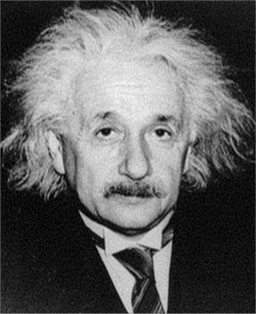
Se conservan los coeficientes con mayor |F[u,v]| (el resto se pone a 0) y se aplica la IFFT. Con el 5 % ya se reconoce la cara: la energía se concentra en pocas frecuencias bajas.
espectro de una suma y de un producto
Suma frente a producto
bloque C · pregunta V/F del examen
Convolución
Convolucionar en el espacio es multiplicar en frecuencia: enunciado, demostración, coste y la trampa de la convolución circular.
pregunta V/F del examen
Teorema de la convolución
1D discreto, N muestras · convolución circular
Demostración del teorema
imagen 512×512 · núcleo m×m · MN = 262 144 · log₂(MN) = 18
¿Cuándo compensa la FFT?
| método | operaciones | por píxel |
|---|---|---|
| espacial no separable | MN·mn | m² |
| espacial separable | MN(m+n) | 2m |
| frecuencial | ≈ 2MN·log₂(MN) | ≈ 36 |
La FFT del filtro es un coste extra (se amortiza si se reutiliza). El coste frecuencial no depende del tamaño del núcleo.
«the convolution theorem offers… speeding up image filtering»
V/F: el teorema acelera
La convolución pasa a ser un producto elemento a elemento y la FFT cuesta \(O(MN\log MN)\), independiente del tamaño del núcleo, frente a \(O(MNmn)\) en el espacio.
gaussiana σ = 12 sobre einstein · resultado real
Circular frente a lineal
El error se concentra en los bordes: sin relleno, lo que sale por abajo reaparece por arriba y lo de la derecha, por la izquierda (máximo 41 niveles de gris).
por qué aparece el wraparound · esquema 1D
¿Cuánto hay que rellenar?
f mide M y el núcleo m: la convolución lineal mide M + m − 1. Si el periodo es menor, cada copia invade la siguiente.
bloque D · propiedades del espectro
El espectro
Cómo visualizarlo, qué le pasa al trasladar y al girar, y por qué la fase lleva la estructura.
cómo verlo · einstein
Espectro centrado
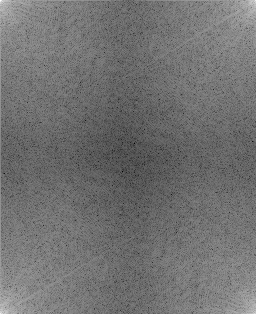
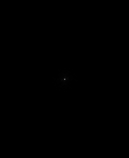
F = np.fft.fftshift(np.fft.fft2(im)) # la DC (0,0) pasa al centro vis = np.log(1 + np.abs(F)) # el rango dinámico es enorme im2 = np.real(np.fft.ifft2(np.fft.ifftshift(F))) # deshacer el shift ANTES
Sin logaritmo solo se ve un punto: la DC es muchísimo mayor que el resto. Centro = frecuencias bajas, bordes = altas.
propiedad · demostración
Traslación
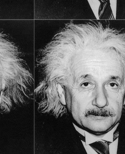
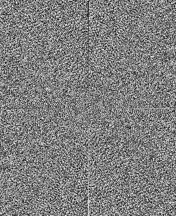
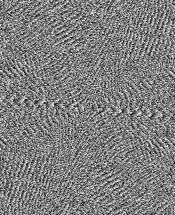
estimar un desplazamiento
Correlación de fase
La fase relativa es la exponencial de la traslación y su inversa es un impulso: la posición del máximo es el desplazamiento.
def desplazamiento(f1, f2):
R = np.fft.fft2(f2) * np.conj(np.fft.fft2(f1))
R /= np.abs(R) + 1e-12
r = np.real(np.fft.ifft2(R))
return np.unravel_index(np.argmax(r), r.shape)
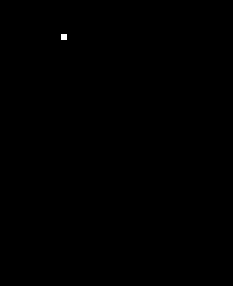
einstein y su copia trasladada (40, 70): la función devuelve (40, 70) y r vale 1 en el pico.
propiedad
Rotación
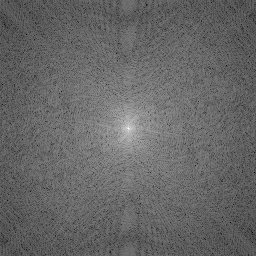
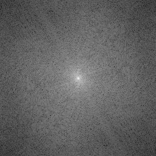
Girar la imagen gira el espectro el mismo ángulo y alrededor del centro. Las líneas de energía del espectro, perpendiculares a los bordes de la imagen, giran con ella.
experimento de intercambio
Magnitud frente a fase
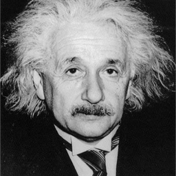
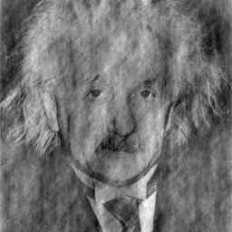
texturas periódicas · mimbre frente a habas
Cuando manda la magnitud
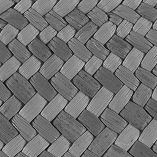
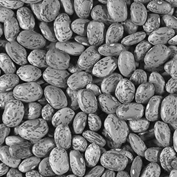
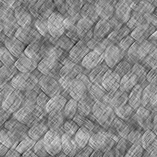
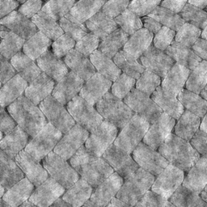
En el mimbre, tan periódico, el resultado conserva la trama de tejido aunque la fase sea de las habas: la magnitud (picos de frecuencia muy marcados) domina. En imágenes naturales, no.
qué y dónde · incertidumbre
Límites de Fourier
Fourier dice qué frecuencias hay, pero no dónde: cada onda ocupa toda la imagen. Esto motiva la STFT (ventana) y las wavelets.
| base | en x | en u |
|---|---|---|
| píxel (δ) | perfecta | ninguna |
| onda (sin, cos) | ninguna | perfecta |
| gaussiana / STFT | compromiso | compromiso |
bloque E · filtrado en frecuencia
Filtros
G = H·F: el procedimiento en 7 pasos y los filtros paso bajo, paso alto, banda y notch, ideales y gaussianos.
función de transferencia
Filtrar = modificar el espectro
| filtro H | efecto en la imagen |
|---|---|
| paso bajo | suaviza, quita ruido |
| paso alto | realza bordes y detalles |
| paso banda | detalles de un tamaño concreto |
| banda eliminada / notch | quita interferencias periódicas |
H es la función de transferencia; su transformada inversa h es la respuesta al impulso (el núcleo espacial). Perfiles gaussianos: D₀ = 30; banda con C₀ = 60, W = 30.
ejercicio · einstein · resultados reales
Empareja filtro y salida
Función de transferencia H (centro = DC)
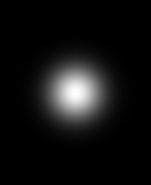
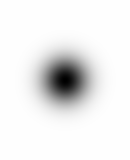
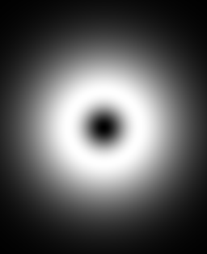
Salida g (gris medio = 0 en B y C)
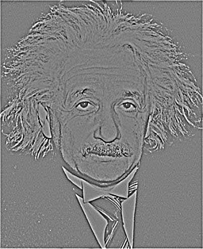
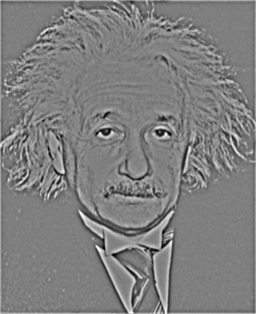
Gonzalez–Woods · imagen M×N, relleno P×Q = 2M×2N
Procedimiento en 7 pasos
- 1Rellenar f con ceros hasta P×Q
- 2Multiplicar por \((-1)^{x+y}\) (centra la DFT)
- 3Calcular la FFT: F(u,v)
- 4H(u,v) real, simétrica, P×Q, centrada
- 5Producto G = H·F
- 6IFFT, parte real, y multiplicar por \((-1)^{x+y}\)
- 7Recortar la esquina M×N
def filtrar(im, H): # H: P×Q centrada
M, N = im.shape
fp = np.zeros(H.shape) # 1. relleno
fp[:M, :N] = im
F = np.fft.fftshift(np.fft.fft2(fp)) # 2-3
g = np.fft.ifft2(np.fft.ifftshift(F * H)) # 5-6
return np.real(g)[:M, :N] # 6-7
fftshift/ifftshift equivalen a multiplicar por \((-1)^{x+y}\) cuando P y Q son pares. Es la que usan FT, IFT y filterFreq.por qué el signo alterno centra la DFT
El truco del signo alterno
f = np.array([1, 2, 3, 4]); n = np.arange(4) np.fft.fft(f) # [10, -2+2j, -2, -2-2j] np.fft.fft(f * (-1)**n) # [-2, -2-2j, 10, -2+2j] np.fft.fftshift(np.fft.fft(f)) # idéntico
fftshift (comprobado con N = 5).ancho recíproco
Gaussiana ↔ gaussiana
corte brusco · einstein
Paso bajo ideal
D₀ pequeño ⇒ muy borrosa y con ondas alrededor de los bordes (ringing). Con D₀ = 160 casi no se ve el efecto porque se conserva casi todo el espectro.
núcleo espacial de H
Ringing del filtro ideal
La caja de frecuencia es una sinc en el espacio (una función de Bessel J₁(r)/r en 2D). Tiene lóbulos laterales con valores negativos que decaen despacio.
transición suave · sin ringing
Paso bajo gaussiano
Misma frecuencia de corte, pero sin las ondas del ideal. En D = D₀ la ganancia vale \(e^{-1/2}\approx0{,}61\), no 0. Su núcleo espacial es otra gaussiana, positiva, y por eso no hay ringing.
realce de bordes · gris medio = 0
Paso alto
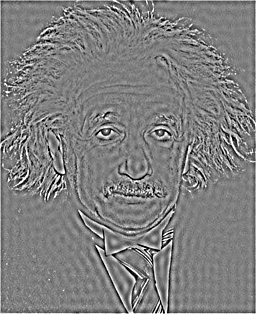
anillo de frecuencias · C₀ = centro, W = anchura
Banda eliminada
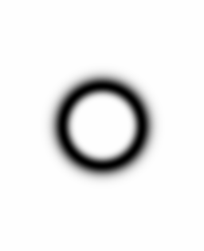
El paso banda es su complemento: \(H_{BP}=1-H_{BR}\). El gaussiano es suave y no tiene ringing.
interferencia periódica · einstein + onda de ejemplo
Filtro notch
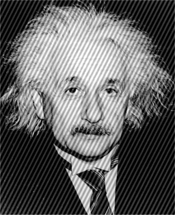
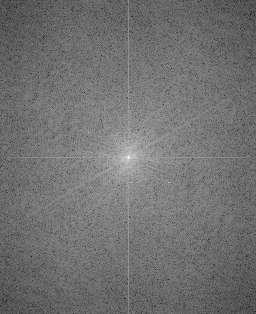
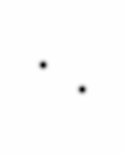
Una onda periódica suma dos picos simétricos ±(u₀, v₀) al espectro. El notch pone H = 0 solo en esos puntos (y 1 en el resto): la imagen apenas se ve afectada.
bloque F
Repaso
Chuleta de pares, propiedades y costes, y verdadero o falso de práctica.
para llevarte al examen
Chuleta
| espacio | frecuencia |
|---|---|
| impulso δ | constante (plano) |
| constante | impulso en la DC |
| gaussiana (σ) | gaussiana (1/σ) |
| caja (rect) | sinc |
| f * h | F · H |
| f · g | F * G (circular) |
| propiedad | efecto |
|---|---|
| traslación | |F| igual; la fase cambia |
| rotación θ | el espectro gira θ |
| f real | F[−u] = F[u]* |
| F[0,0] | suma de píxeles (DC) |
| fase | lleva la estructura |
| bordes | altas frecuencias |
| coste | fórmula | nota |
|---|---|---|
| DFT directa 1D | O(N²) | N = 1024: 1 048 576 |
| FFT | O(N log N) | N = 1024: 10 240 (≈ 100×) |
| filtrado frecuencial | ≈ 2MN log₂(MN) | independiente del núcleo; cruce m ≈ 6 / 18 |
contesta antes de que aparezca la respuesta
V/F de práctica
| afirmación | resp. | por qué |
|---|---|---|
| El teorema de la convolución permite acelerar el filtrado | verdadero | producto + FFT; núcleos grandes, circular, solo lineal |
| El espectro cambia con la traslación | falso | el módulo no cambia; solo la fase |
| La fase es más importante para la estructura | verdadero | excepto en patrones muy periódicos |
| El paso bajo ideal no produce artefactos | falso | su núcleo es una sinc: ringing |
| La DFT supone que la imagen es periódica | verdadero | de ahí la convolución circular y el wraparound |
| Los bordes son bajas frecuencias | falso | errata de los apuntes: son altas |
| La mediana se puede aplicar con el teorema de la convolución | falso | no es lineal: no hay H que la represente |
np.fft.fft2 divide el resultado entre NM | falso | no normaliza; es ifft2 quien divide entre NM |